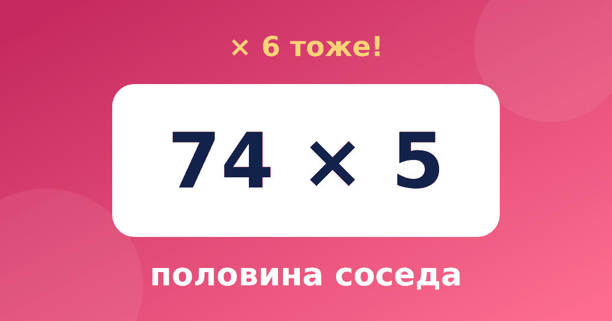

Умножение на 5 и на 6 за несколько секунд: правило «половина соседа»

В системе Трахтенберга умножение на 5 и на 6 строится на одном новом понятии: половина соседа. Правила короткие, но у них есть важная деталь, из-за которой дети ошибаются чаще всего. Разберём её на примерах. Мы покажем умножение на 5 в уме и умножение на 6 в уме, а ещё расскажем, как умножить на 5 быстро, не заглядывая в таблицу.
Что такое половина соседа
Соседом называем цифру, которая стоит справа от выбранной. Половина считается без остатка: половина от 7 — это 3, половина от 8 — это 4, половина от 1 — это 0. Для чётных цифр всё очевидно, для нечётных остаток просто отбрасываем. Именно этот отброшенный остаток объясняет второе правило: если сама цифра нечётная, к ответу нужно добавить 5.
Правило для умножения на 5
Ставим нулик слева и считаем справа налево. Каждая цифра ответа равна половине соседа, и ещё прибавляем 5, если сама цифра нечётная. У последней цифры сосед невидимый нулик, поэтому для неё остаётся только 0 или 5, смотря на чётность.
Пример: 74 × 5. Число с нуликами: 0 7 4 0.
- Цифра 4, сосед 0: 0 (ничего не добавляем). Пишем 0.
- Цифра 7, сосед 4: 2 + 5 = 7 (половина соседа 4, нечётная цифра, +5). Пишем 7.
- Нулик слева, сосед 7: 3 (половина соседа 7). Пишем 3.
Ответ 370.
Пример: 238 × 5.
- Цифра 8, сосед 0: 0 (ничего не добавляем). Пишем 0.
- Цифра 3, сосед 8: 4 + 5 = 9 (половина соседа 8, нечётная цифра, +5). Пишем 9.
- Цифра 2, сосед 3: 1 (половина соседа 3). Пишем 1.
- Нулик слева, сосед 2: 1 (половина соседа 2). Пишем 1.
Ответ 1190.
Правило для умножения на 6
Здесь к каждой цифре добавляется половина соседа, а нечётная цифра по-прежнему даёт +5. То есть правило для 6 — это правило для 5 плюс сама цифра. Пример: 74 × 6.
- Цифра 4, сосед 0: 4 (цифра 4). Пишем 4.
- Цифра 7, сосед 4: 7 + 2 + 5 = 14 (цифра 7, половина соседа 4, нечётная цифра, +5). Пишем 4, 1 запоминаем.
- Нулик слева, сосед 7: 3 + 1 = 4 (половина соседа 7, перенос 1). Пишем 4.
Ответ 444.
Пример с четырьмя цифрами в ответе: 358 × 6.
- Цифра 8, сосед 0: 8 (цифра 8). Пишем 8.
- Цифра 5, сосед 8: 5 + 4 + 5 = 14 (цифра 5, половина соседа 8, нечётная цифра, +5). Пишем 4, 1 запоминаем.
- Цифра 3, сосед 5: 3 + 2 + 5 + 1 = 11 (цифра 3, половина соседа 5, нечётная цифра, +5, перенос 1). Пишем 1, 1 запоминаем.
- Нулик слева, сосед 3: 1 + 1 = 2 (половина соседа 3, перенос 1). Пишем 2.
Ответ 2148.
Почему это работает
Потому что 5 — это половина от 10, а 6 = 5 + 1. Число × 5 равно половине от числа × 10. Например, 74 × 10 = 740, а половина от 740 равна 370. Когда мы делим число пополам цифра за цифрой, нечётная цифра отдаёт соседке справа лишнюю единичку, а это 5 в следующем разряде. Для 6 достаточно прибавить само число: 370 + 74 = 444. Для сравнения прочитайте, как устроена таблица умножения на 5 и на 10 в школе.
Тренируемся
Закройте ответы, посчитайте по правилу и сверьтесь.
- 18 × 5 = 90
- 46 × 5 = 230
- 85 × 5 = 425
- 132 × 5 = 660
- 376 × 5 = 1880
- 24 × 6 = 144
- 57 × 6 = 342
- 93 × 6 = 558
- 248 × 6 = 1488
Типичные ошибки
- Считают половину соседа с остатком, например половина от 7 равна 3,5. Нужно отбросить остаток.
- Забывают прибавить 5 для нечётной цифры. Помогает привычка сначала смотреть на цифру, потом на соседа.
- Берут половину самой цифры вместо половины соседа.
Вопросы и ответы
Зачем учить умножение на 5 по Трахтенбергу, если есть таблица?
Для однозначных чисел таблица быстрее. Приём выигрывает на длинных числах, например 1 238 × 5, где достаточно смотреть на пары соседних цифр. Заодно ребёнок тренирует половину числа, а она пригодится в делении.
Что делать, если ребёнок путает половину и «до 9»?
Тренируйте их отдельно, короткими вопросами без умножения: «половина от 8», «сколько до 10 для 3». Когда ответы появляются сразу, правило для умножения встаёт на место.
Можно ли использовать правило для 5 при умножении на 50 или 500?
Да: умножьте на 5 и припишите нули. Например, 74 × 50 = 3700, потому что 74 × 5 = 370 и дописываем один нуль.
Мини-игра «Половинки»
Для разогрева возьмите игральные кубики или карточки с цифрами. Ребёнок вытягивает карточку и называет половину числа без остатка, потом говорит, нечётная цифра или нет. Через 3–4 минуты эти ответы начинают приходить автоматически, а умножение на 5 и 6 становится намного проще.
Как учить
Начните с игры «половина»: называете число, ребёнок называет половину без остатка. Потом переходите к умножению на 5 и только после этого к 6. Всё это можно потренировать в тренажёре «Быстрый счёт», где половина соседа и «нечётная цифра» тренируются отдельными быстрыми вопросами.